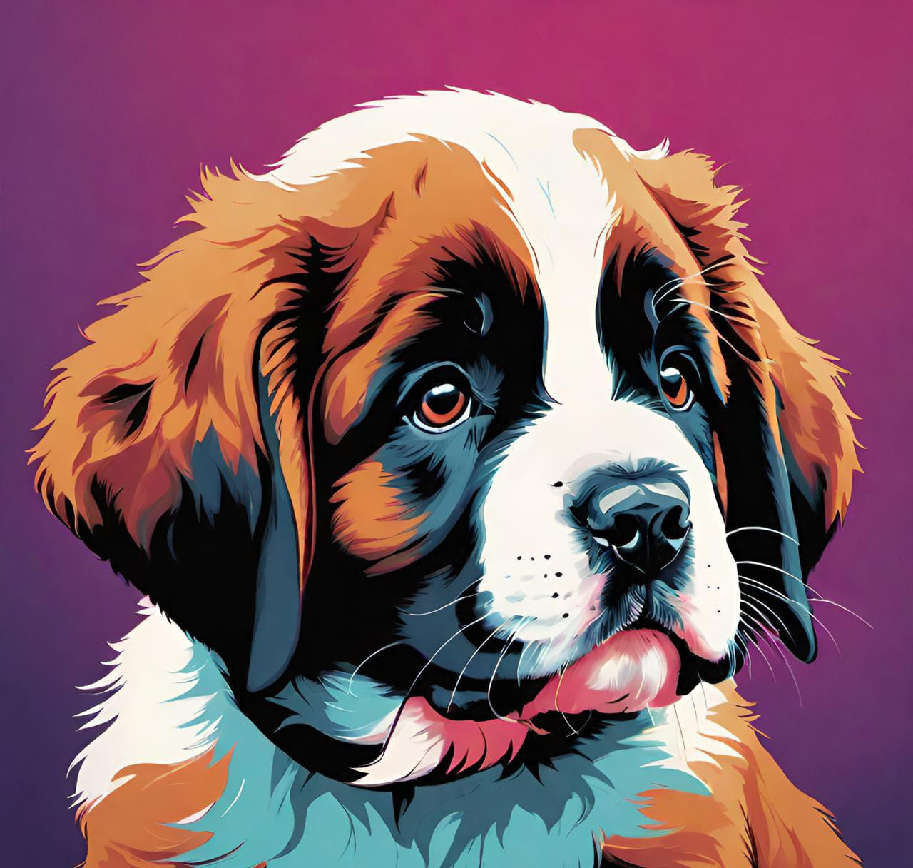
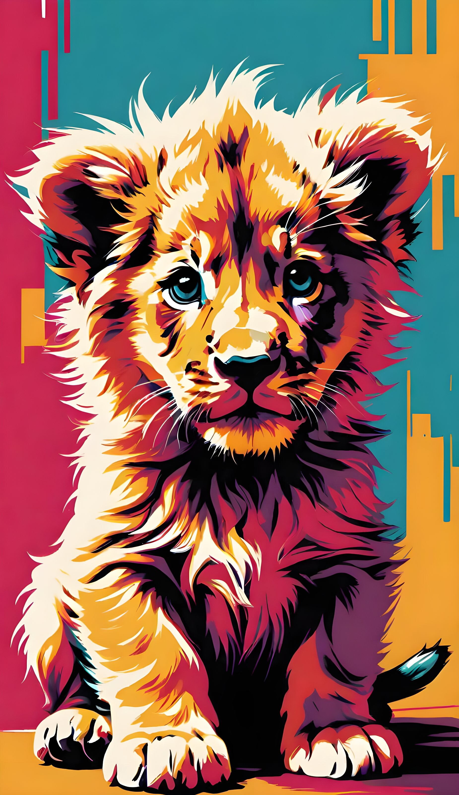
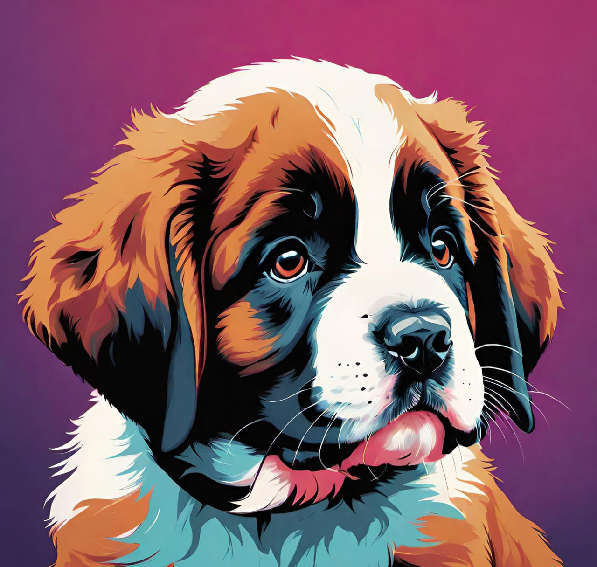
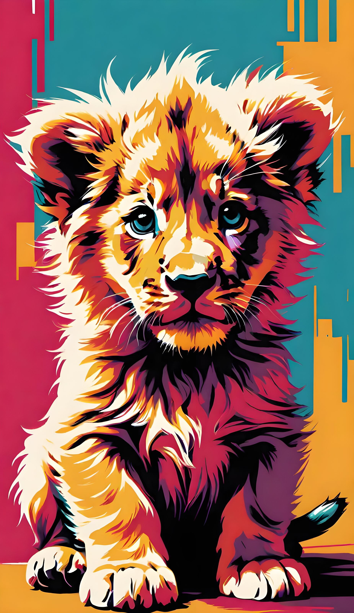
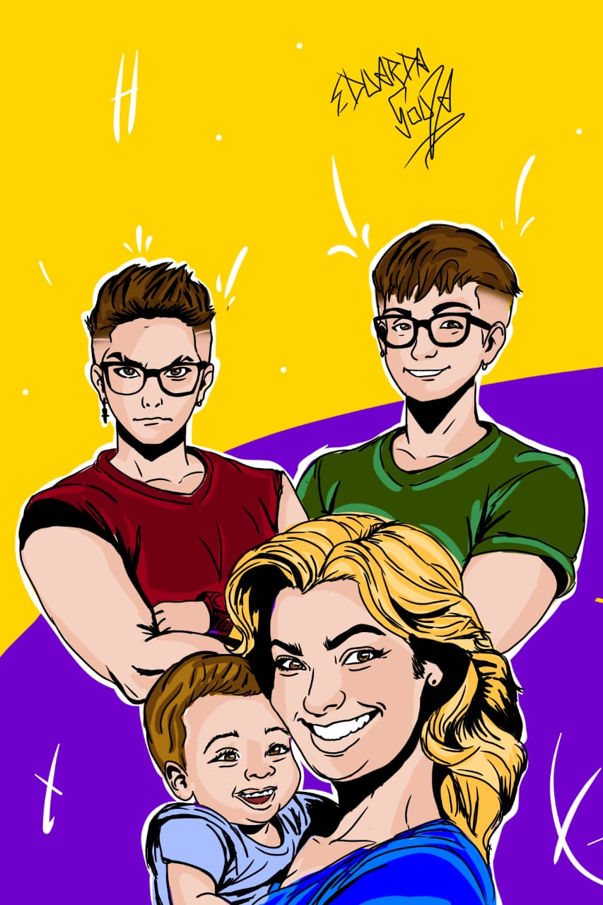
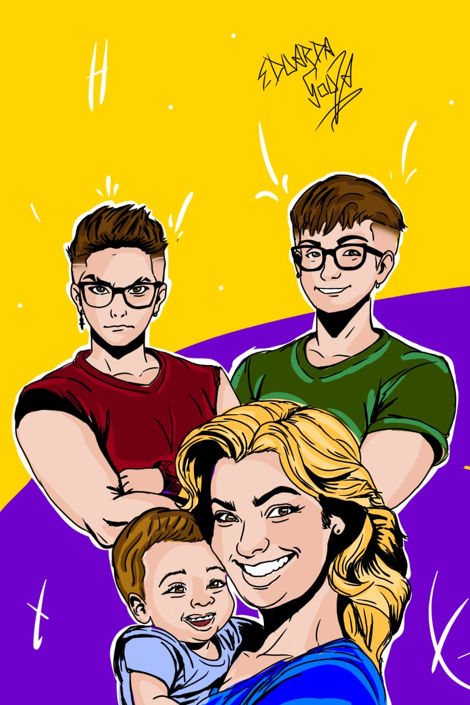

×
ALUMA - Assistente de Lógica de Uso para Memória e Aprendizado
HTML
CSS
JavaScript
O projeto de Trabalho de Conclusão de Curso (TCC) desenvolvido na Fundação O Pão dos Pobres apresenta a ALUMA (Assistente de Lógica de Uso para Memória e Aprendizado), uma Inteligência Artificial voltada à área da educação, com o objetivo de democratizar o acesso ao conhecimento, facilitar o aprendizado e auxiliar professores, alunos e instituições de ensino em geral.
Objetivo:
A ALUMA foi projetada para ser uma ferramenta de apoio didático e pedagógico, oferecendo uma interface interativa capaz de responder dúvidas, revisar conteúdos, sugerir atividades e reforçar a memorização por meio de uma lógica personalizada de uso. A IA é adaptável para escolas, cursos livres, ONGs educacionais e outras instituições que busquem inovação no processo de ensino-aprendizagem.


 




 
